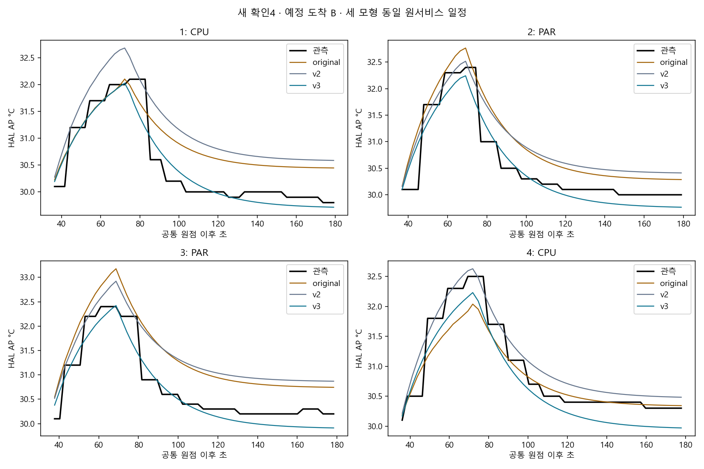
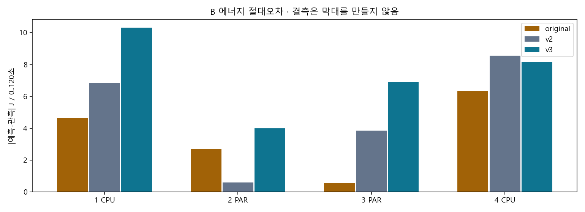
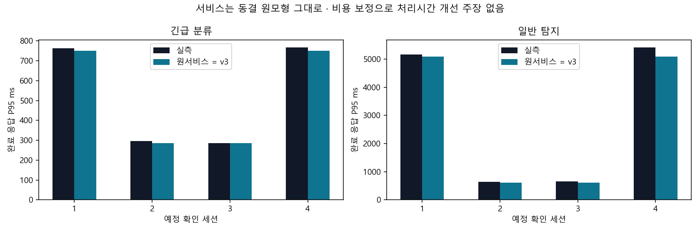

계수·선택·원서비스는 새 계측 전에 동결했습니다. 기본 모형 채택·정책 효과·절대 에너지 교정은 별도입니다. 새 APK와 배터리6% 허용 조건을 기록하며 이전20% 이상 환경의 엄격 재현으로 표시하지 않습니다.
전체 수치·근거 · 동결 새 모형 · 동결 증거 · 전체4 세션 · A/B 비용 오차 · 서비스·전체 도착 분모 · 조건부 중첩 개발 평가
사전 모형 계획 · 전문가 토론 · 배터리 환경 개정 · 관측 timeout 수정
| index | policy | status | planned_requests | observed_completed | observed_timely |
|---|---|---|---|---|---|
| 0 | CPU_URGENT_ONLINE_V1 | validated | 96 | 96 | 96 |
| 1 | B2_PARALLEL_ONLINE_V1 | validated | 96 | 96 | 96 |
| 2 | B2_PARALLEL_ONLINE_V1 | validated | 96 | 96 | 96 |
| 3 | CPU_URGENT_ONLINE_V1 | validated | 96 | 96 | 96 |
A는 실제 일정 입력의 조건부 오차입니다. B는 예정 도착부터의 예측이며 세 모형 모두 동일한 원서비스 일정을 씁니다. 두 범위 평균을 합치지 않습니다. v2 자체서비스 예측은 summary의 보조 결과로만 제공합니다.
| mode | model | evaluated_sessions | mean_AP_MAE_c | mean_J120_abs_j | worst_AP_MAE_c | worst_J120_abs_j |
|---|---|---|---|---|---|---|
| A_actual_schedule | original | 4 | 0.4154 | 3.49351 | 0.59344 | 6.35521 |
| A_actual_schedule | v2 | 4 | 0.47464 | 4.84155 | 0.66984 | 8.56558 |
| A_actual_schedule | v3 | 4 | 0.23611 | 7.17172 | 0.29399 | 10.1977 |
| B_fixed_original_service | original | 4 | 0.41735 | 3.55536 | 0.60125 | 6.33779 |
| B_fixed_original_service | v2 | 4 | 0.48075 | 4.95965 | 0.67318 | 8.55029 |
| B_fixed_original_service | v3 | 4 | 0.23367 | 7.34008 | 0.29492 | 10.32912 |
정책별2·최악 세션·잔차는 summary.json 및 CSV에 모두 남깁니다. 검증되지 않은 계측의 오차를0으로 채우지 않습니다.
{
"native_APK_sha256": "356c668fe111cd1114fc8251b743d0e012b3b159a7f85154a05caf0a2552fce6",
"admitted_minimum_percent": 6,
"minimum_observed_percent": 23,
"any_below20": false,
"power_save_mode_observed": false,
"scope": "new low-battery diagnostic APK/opt-in6%; not same-APK strict replication of original20% environment"
}원2초 thermal timeout 시도는 1건의 별도 부록으로 보존했습니다. 실패 시도를 완료 확인으로 합치지 않습니다.


